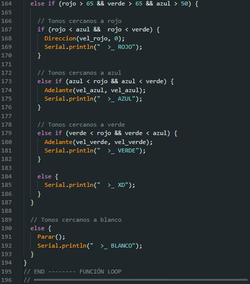

Para entrar en la etapa final de nuestro proyecto del carro sensor de color, uniremos la lógica de programación del funcionamiento del puente H con el sensor de color TCS3200, para ello aplicaremos el siguiente código en nuestro software de Arduino, código que cumple la siguiente tarea:
- Si el sensor está captando tonos de color blanco, el carro detendrá por completo su marcha.
- Si el sensor está captando tonos de color negro, el carro girará hacia la derecha.
- Si el sensor está captando tonos de color rojo, el carro girará hacia la izquierda.
- Si el sensor está captando tonos de color azul, el carro irá hacia adelante a una velocidad media.
- Si el sensor está captando tonos de color verde, el carro irá hacia adelante a su máxima velocidad.

